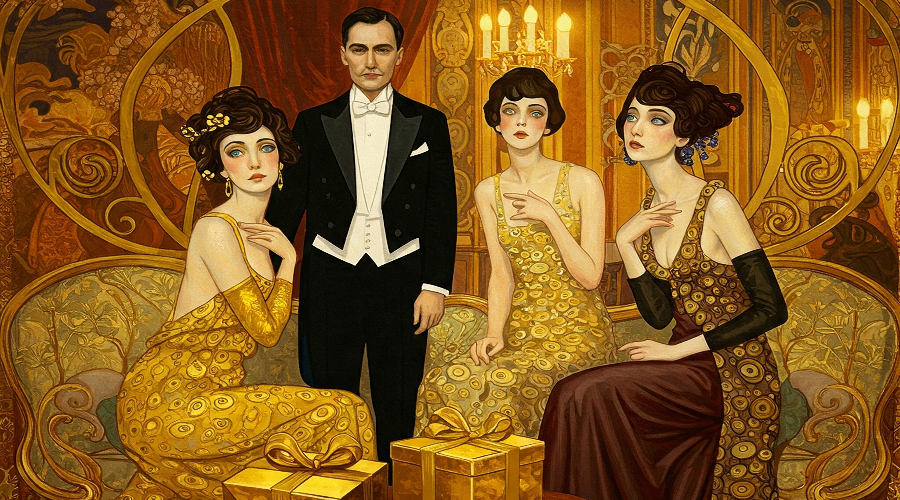
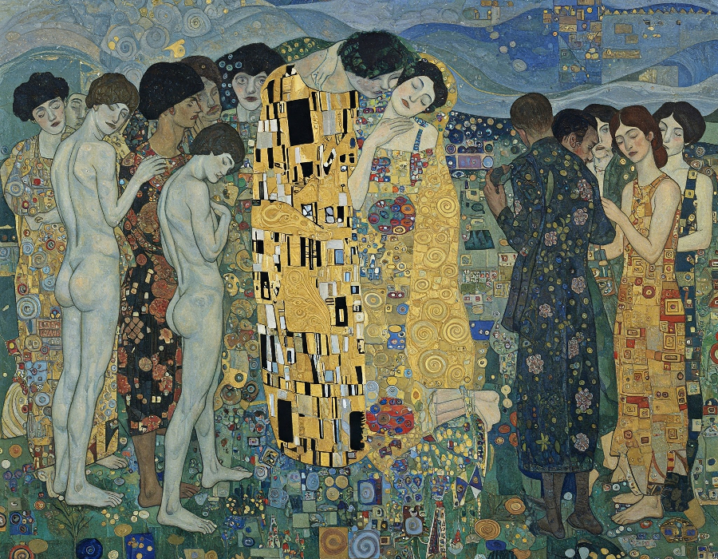

The Golden Age: America's Amnesiaa
Abstract
This paper examines America's Gilded Age (1870s-1900), a period often glorified as a golden era of progress and prosperity. However, beneath the veneer of economic growth and technological advancement lay extreme wealth disparity, labor exploitation, and social instability. By analyzing the economic structures, political corruption, and social consequences of this era, this paper aims to illuminate how the concentration of wealth in the hands of a small elite created systemic problems that ultimately led to significant social upheaval. The historical lessons from this period provide valuable insights into contemporary economic inequality debates and the potential consequences of unfettered wealth concentration.
Table of Contents
The First Golden Age
America's first Golden Age, now known as the Gilded Age, spanned roughly from 1870 to 1900. This Guilded Age represents one of the most transformative yet contradictory periods in the nation's history. Following the turmoil of the Civil War, the United States experienced unprecedented industrial growth, technological innovation, and economic expansion that fundamentally reshaped American society. Railroad networks expanded from approximately 35,000 miles in 1865 to over 193,000 miles by 1900, while steel production soared from 77,000 tons to over 11 million tons during the same period (Cashman, 1984). On the surface, this era appeared to herald America's arrival as a modern industrial powerhouse.
The term "Gilded Age" itself reveals the period's fundamental contradiction. Coined by Mark Twain and Charles Dudley Warner in their 1873 satirical novel "The Gilded Age: A Tale of Today," the metaphor refers to the practice of applying a thin layer of gold over a base metal—creating the illusion of solid gold while concealing a less valuable reality beneath. This perfectly captured the essence of an era where dazzling wealth and progress masked profound social problems, corruption, and inequality. As historian Sean Dennis Cashman noted, it was "an age of incredible opulence displayed against a backdrop of extreme poverty" (Cashman, 1984).
Behind the spectacle of economic growth and the amassing of unprecedented fortunes by industrialists like John D. Rockefeller, Andrew Carnegie, and J.P. Morgan lay a darker reality. By 1890, the richest 1% of Americans owned approximately 51% of all wealth, while the bottom 44% possessed just 1.2% (Williamson & Lindert, 1980). This staggering concentration of wealth occurred alongside dangerous working conditions, child labor, urban slums, and widespread poverty affecting millions of Americans. The average industrial worker earned less than $500 annually (approximately $15,000 in today's terms) while working 60-hour weeks in often hazardous environments (Zinn, 2005).
The disparities of this period were not accidental but rather systematically created and maintained through political corruption, monopolistic business practices, and the exploitation of a growing immigrant workforce. Railroad companies alone received over 170 million acres of public lands in government subsidies while using financial manipulation, predatory pricing, and political bribery to eliminate competition (White, 2011). The relationship between government and business became so intertwined that Senator Mark Hanna famously remarked, "There are two things that are important in politics. The first is money, and I can't remember what the second one is."
What makes the Gilded Age particularly relevant today is its demonstration of how narratives of progress and prosperity can obscure growing systemic problems that ultimately threaten social stability. The extreme economic inequality eventually generated powerful countermovements, including the rise of labor unions, the Populist Movement, and ultimately the Progressive Era reforms. From the Great Railroad Strike of 1877 to the Pullman Strike of 1894, increasingly organized resistance challenged the status quo, often met with violent suppression from both private security forces and government troops (Brands, 2010).
As we examine our own era of technological disruption, globalization, and growing wealth concentration, the Gilded Age offers valuable historical perspective. The lessons of this period remind us that economic growth alone does not ensure broadly shared prosperity, and that extreme inequality often leads to social instability and demands for reform. By understanding how the gilded facade of progress concealed underlying exploitation during this pivotal period, we gain important insights for evaluating contemporary claims about economic prosperity and its distribution throughout society.
The Facade of Prosperity
The Gilded Age (Americas first Golden Age) was characterized by astounding technological advancement and industrial growth that transformed America's economic landscape. Between 1870 and 1900, the nation's gross national product more than tripled from $7.4 billion to $24.6 billion, while railroad tracks crisscrossed the continent, telegraph lines connected distant cities, and electric lighting began illuminating urban centers (Gordon, 2016). This era saw the birth of modern corporations, with innovations in business organization, manufacturing, and marketing that dramatically increased productivity and created new consumer markets. The Brooklyn Bridge, the Washington Monument, and Chicago's first skyscrapers stood as physical manifestations of American ingenuity and ambition. To many observers, especially foreign visitors, America appeared to be entering an unprecedented age of progress and prosperity.
The material excess of the period's elite further reinforced the image of a golden age. The opulent lifestyles of the newly wealthy became the stuff of legend, with industrial magnates constructing palatial mansions along New York's Fifth Avenue and in Newport, Rhode Island. Conspicuous consumption reached new heights as the Vanderbilts hosted costume balls costing millions in today's dollars, while wealthy industrialists commissioned yachts larger than naval vessels. Society columns documented elaborate social seasons, European art acquisitions, and architectural marvels like the 250-room Biltmore Estate (Schlereth, 1991). These displays of wealth were often deliberately public—not merely for personal enjoyment but as a way to establish social position and assert the legitimacy of their vast fortunes. As historian Thorstein Veblen observed in his 1899 work "The Theory of the Leisure Class," this "conspicuous consumption" served to showcase one's place in the social hierarchy.
American cultural narratives of the period celebrated this prosperity and reinforced the myth that anyone could achieve similar success. Horatio Alger's wildly popular "rags-to-riches" novels sold millions of copies, promoting the idea that hard work, virtue, and pluck inevitably led to economic success. Popular magazines like Harper's Weekly and Leslie's Illustrated featured admiring profiles of "captains of industry" while newspapers chronicled their business triumphs. The 1876 Centennial Exposition in Philadelphia and the 1893 World's Columbian Exposition in Chicago showcased American technological achievement to the world, drawing millions of visitors to marvel at displays of industrial might and scientific innovation (Rydell, 1984). Public discourse, heavily influenced by Social Darwinist thinking, framed the economic elite as "the fittest" who had naturally risen to their positions through superior ability and character—conveniently obscuring the structural advantages, political corruption, and exploitative practices that enabled their ascendance.
The Economic Reality Behind the Gilded Facade
The Gilded Age revealed a stark contradiction between national prosperity and individual welfare. While America's total wealth tripled between 1870 and 1900, this abundance was dramatically concentrated—the richest 1% controlled 51% of all wealth, while the bottom 44% of Americans owned just 1.2%. This extreme disparity wasn't accidental but resulted from deliberate business practices pioneered by industrial titans. John D. Rockefeller's Standard Oil captured 90% of America's oil refining through predatory pricing and secret railroad rebates. J.P. Morgan created massive trusts like U.S. Steel, consolidating entire industries under single corporate umbrellas. These "robber barons" didn't simply outcompete rivals; they systematically eliminated competition through tactics that would later become illegal.
For ordinary Americans, the much-celebrated industrial boom translated into grim everyday realities. Factory workers endured 60-hour workweeks in dangerous conditions for wages that barely sustained their families—the average industrial worker earned less than $500 annually (approximately $15,000 today). Workplace accidents were commonplace, with over 6,000 railroad workers killed in 1890 alone. Child labor flourished, with children as young as eight working in mines and mills for pennies a day. Urban workers lived in crowded tenements where disease spread rapidly due to inadequate sanitation. The contrast was stark: while Cornelius Vanderbilt II's 70-room Fifth Avenue mansion featured a gymnasium and a two-story dining room filled with European art, families just miles away struggled to afford a single daily meal.
America's farmers faced their own economic catastrophe during this period. As new machinery and western lands expanded production, agricultural prices collapsed—wheat that sold for $1.45 per bushel after the Civil War plummeted to 49 cents by the 1890s. Farmers became trapped in a cycle of debt, mortgaging their land to buy equipment needed to compete, then watching as falling prices made repayment impossible. In the South, the crop lien system bound former slaves and poor whites to predatory arrangements with interest rates as high as 60%. When drought struck the Great Plains in the 1890s, thousands lost everything, fueling the rise of the Populist Movement, which demanded reforms like government regulation of railroads and inflation of the currency to ease debt burdens.
The Political Architecture of Inequality
This economic disparity was actively maintained through a political system that served wealth rather than the public interest. Corporate influence reached unprecedented levels, with Senate seats essentially available for purchase. Montana copper magnate William A. Clark openly admitted spending $272,000 (over $7 million today) to bribe state legislators for his Senate appointment. The government generously subsidized business interests—railroad companies alone received 170 million acres of public lands, an area larger than Texas—while rejecting basic protections for workers. Politicians didn't just accommodate business interests; many were business interests, with corporate lawyers and executives holding key positions throughout government.
Corruption permeated every level of the system. The "spoils system" allowed victorious political parties to distribute government jobs to supporters regardless of qualification. In major cities, political machines like New York's Tammany Hall controlled municipal contracts and protection rackets that siphoned millions from public coffers. The judiciary offered little check on corporate power—in Santa Clara County v. Southern Pacific Railroad, the Supreme Court established corporate personhood and used the 14th Amendment (intended to protect former slaves) to strike down business regulations. When workers organized for better conditions, government forces were routinely deployed against them—between 1877 and 1903, federal troops intervened in labor disputes more than 160 times, almost always supporting management over labor.
The Consequences and Countercurrents
The absence of economic safeguards during this period allowed exploitation on a massive scale. Without banking regulations, financial panics periodically wiped out small depositors while allowing insiders to profit. Without meaningful antitrust enforcement, monopolists crushed competition and dictated prices. Without workplace safety standards, companies had little incentive to prevent accidents that killed and maimed thousands annually. The government's laissez-faire approach wasn't neutral—it actively empowered those with existing wealth while leaving workers, farmers, and small businesses vulnerable to exploitation. This political landscape demonstrates how economic inequality, once established, perpetuates itself through political influence. The wealthy didn't just receive favorable treatment; they systematically shaped the rules to ensure continued advantage.
This combination of economic consolidation and political corruption eventually created conditions so intolerable that reform became inevitable. When children worked twelve-hour shifts in factories, when immigrants were packed into firetraps like the Triangle Shirtwaist Factory (where 146 workers died in a 1911 fire because exits were locked), when farmers lost generations-old family homesteads to foreclosure, the myth of American opportunity became increasingly difficult to maintain. The excesses of the Gilded Age ultimately gave birth to powerful countervailing forces—muckraking journalists who exposed corruption, labor unions that organized despite violent suppression, and political reformers who demanded government responsive to public needs rather than private profits. The Progressive Era reforms that followed—including antitrust enforcement, the establishment of the Food and Drug Administration, the direct election of senators, and the graduated income tax—emerged as direct responses to the systemic abuses of the Gilded Age's political economy, proving that extreme inequality eventually generates its own correction through social and political mobilization.
Social Consequences and Reform Movements
The extreme inequality of the Gilded Age generated profound social consequences that ultimately gave birth to powerful reform movements. Labor unrest became increasingly organized and militant as workers faced dangerous conditions with little recourse. The Great Railroad Strike of 1877—sparked by wage cuts during an economic depression—spread across the country and resulted in widespread property destruction and approximately 100 deaths when militia and federal troops intervened. The Homestead Strike of 1892 saw Pinkerton detectives firing on steelworkers, while the Pullman Strike of 1894 paralyzed rail traffic across the nation before being broken by federal troops. Despite this repression, union membership grew from approximately 300,000 in 1870 to over 2 million by 1900. Organizations like the Knights of Labor and later the American Federation of Labor fought for the eight-hour workday, safer conditions, and collective bargaining rights, often at great personal risk to their members. Workers increasingly rejected the notion that their suffering was simply the natural order of things, instead developing a critique of industrial capitalism that demanded fundamental changes.
The urban landscape became a physical manifestation of inequality, with tenement districts that exemplified the human costs of unchecked industrialization.
 Cities grew explosively and haphazardly—New York's population more than doubled between 1870 and 1900—creating overcrowded districts where disease flourished. Diphtheria, tuberculosis, and cholera swept through poor neighborhoods regularly, while sanitation systems failed to keep pace with population growth. The influx of immigrants, who composed up to 87% of residents in some urban districts, became a convenient scapegoat for social problems. Nativist movements blamed newcomers for crime, disease, and moral decay while ignoring the systemic economic forces that created deplorable conditions. Social Darwinism, popularized by thinkers like William Graham Sumner, provided a pseudo-scientific justification for inequality by suggesting that poverty resulted from personal deficiency rather than structural injustice. This ideology conveniently absolved the wealthy of responsibility while portraying their success as evidence of natural superiority—a narrative that helped justify policies favoring the economic elite.
Cities grew explosively and haphazardly—New York's population more than doubled between 1870 and 1900—creating overcrowded districts where disease flourished. Diphtheria, tuberculosis, and cholera swept through poor neighborhoods regularly, while sanitation systems failed to keep pace with population growth. The influx of immigrants, who composed up to 87% of residents in some urban districts, became a convenient scapegoat for social problems. Nativist movements blamed newcomers for crime, disease, and moral decay while ignoring the systemic economic forces that created deplorable conditions. Social Darwinism, popularized by thinkers like William Graham Sumner, provided a pseudo-scientific justification for inequality by suggesting that poverty resulted from personal deficiency rather than structural injustice. This ideology conveniently absolved the wealthy of responsibility while portraying their success as evidence of natural superiority—a narrative that helped justify policies favoring the economic elite.
By the 1890s, a diverse coalition of reformers began challenging these conditions and ideologies. The Progressive Movement emerged from multiple sources: middle-class professionals appalled by urban conditions, women's groups like the Women's Christian Temperance Union, religious leaders advocating a "Social Gospel," farmers' alliances, and labor activists. Muckraking journalists like Ida Tarbell, whose History of the Standard Oil Company exposed Rockefeller's monopolistic tactics, and Jacob Riis, whose photographs documented tenement conditions in How the Other Half Lives, made abstract problems concrete for middle-class readers. Settlement house workers like Jane Addams at Chicago's Hull House lived among immigrants and laborers, developing firsthand understanding of industrial conditions while providing services from daycare to adult education. These reformers rejected both unfettered capitalism and revolutionary socialism, instead seeking to humanize the industrial system through democratic reforms, regulation, and expanded government responsibility for social welfare.
The reform agenda that emerged from these movements directly targeted the mechanisms that had enabled Gilded Age excess. The Sherman Antitrust Act of 1890, though initially weak, established the principle that monopolies could be regulated. The Pure Food and Drug Act of 1906 responded to Upton Sinclair's exposé of meatpacking plants in The Jungle. The 16th Amendment (1913) created the federal income tax, while the 17th Amendment (1913) established direct election of senators, wresting power from corrupt state legislatures. At the state and local levels, reformers implemented workplace safety laws, restricted child labor, established maximum hours for women workers, created health departments, improved water and sewer systems, and expanded public education. These reforms didn't eliminate inequality, but they established crucial precedents: that democratic government could legitimately intervene in the economy to protect public welfare, that corporations were subject to public accountability, and that prosperity needed to be more broadly shared. The Progressive Era that grew from Gilded Age excesses fundamentally transformed the relationship between government, business, and citizens in ways that continue to shape American society.
Lessons for Contemporary Society
The historical experience of the Gilded Age offers striking parallels to our current moment that deserve careful consideration. Today's growing wealth concentration bears unmistakable similarities to the patterns of the late 19th century. In 2021, the wealthiest 1% of Americans held approximately 32% of the nation's wealth, while the bottom 50% owned just 2.8%—proportions approaching Gilded Age levels. Technology billionaires have amassed fortunes that rival or exceed those of Rockefeller and Carnegie in relative terms, often through platform monopolies and network effects that create winner-take-all markets. Just as railroad and telegraph networks enabled unprecedented corporate consolidation in the 1880s, today's digital infrastructure has allowed companies to achieve market dominance across multiple sectors, from retail to communications to financial services. The economic landscape increasingly features what economist Thomas Piketty calls "patrimonial capitalism," where inherited wealth and capital ownership generate greater returns than labor income, potentially creating a new hereditary elite similar to the "robber baron" dynasties of the first Gilded Age.
Perhaps most concerning is how concentrated economic power translates into political influence through mechanisms that would be familiar to Mark Twain and his contemporaries. The 2010 Citizens United Supreme Court decision, like the Santa Clara County case of 1886, expanded corporate rights in ways that amplify their political voice. Campaign finance systems allow wealthy interests to shape policy debates through enormous contributions and independent expenditures. Just as Gilded Age senators represented railroad and banking interests more reliably than their constituents, today's legislative process often seems more responsive to donors and lobbyists than to voters. This influence manifests in tax policies that favor capital over labor, regulatory approaches that protect established firms from competition, and trade agreements that benefit investors while exposing workers to global wage pressures. The revolving door between government and industry continues to spin, with officials moving between regulatory agencies and the corporations they once supervised. These structural advantages allow economic elites to solidify their position through political means, creating a self-reinforcing cycle of inequality similar to the one that characterized the first Gilded Age.
The historical record clearly demonstrates that social stability depends on broadly shared prosperity—a lesson as relevant today as it was in 1900. The extreme inequality of the original Gilded Age generated widespread social unrest, from the railroad strikes of 1877 and 1894 to the rise of radical political movements that challenged the foundations of American capitalism. Today's growing polarization, declining trust in institutions, and rising populist movements on both left and right suggest similar strains in our social fabric. Research consistently shows that highly unequal societies experience greater social problems across multiple dimensions, from health outcomes to crime rates to educational achievement. The Gilded Age experience teaches us that prosperity statistics that fail to reflect the lived reality of most citizens ultimately create conditions for social instability and potentially radical change. When economic growth primarily benefits a narrow slice of the population while leaving others behind, the resulting resentment and alienation threaten democratic governance itself—as the Populist and Progressive reformers understood when they warned that excessive concentration of wealth was incompatible with meaningful democracy.
The regulatory frameworks that emerged from the Progressive Era offer valuable lessons about balancing economic dynamism with social welfare.  The antitrust tradition established by the Sherman Act and strengthened during the Progressive Era recognized that monopoly power threatens both economic efficiency and democratic governance. Financial regulations implemented after the Panic of 1907 and later expanded during the New Deal acknowledged that unregulated markets tend toward instability and collapse without appropriate guardrails. Labor protections, public health initiatives, and social insurance programs all reflected the understanding that market outcomes alone cannot ensure broadly shared prosperity or protect vulnerable populations. Rather than viewing these interventions as impediments to growth, we might better understand them as investments in social stability that made sustainable progress possible. Today's challenges—from platform monopolies to financial engineering to gig economy labor practices—require similar regulatory innovation, adapting Progressive Era principles to contemporary circumstances. The central insight remains valid: democratic government must serve as a counterweight to concentrated economic power if prosperity is to be broadly shared.
Perhaps the most valuable lesson from the Gilded Age is the importance of distinguishing between genuine economic health and deceptive indicators of prosperity. Then as now, aggregate statistics about economic growth, stock market performance, and corporate profits can mask troubling underlying conditions. GDP growth that benefits primarily shareholders while wages stagnate, low unemployment figures that conceal underemployment and precarious work arrangements, and technological innovation that disrupts communities without creating comparable new opportunities—all represent forms of "gilded" prosperity that glitter more impressively from a distance than up close. The original Gilded Age teaches us to look beyond headline numbers to examine how prosperity is distributed, how economic security is maintained, and how opportunity is extended across social classes. It reminds us that economic arrangements are not natural or inevitable but rather social constructions that reflect power relationships and policy choices. By recognizing the parallels between past and present patterns of inequality, we gain perspective on our current challenges and perhaps the wisdom to avoid repeating historical mistakes.
Conclusion: Beyond the Gilding
The Gilded Age stands as more than a historical curiosity—it represents a profound cautionary tale about the fragility of democratic capitalism when wealth and power become overly concentrated. As we navigate our own era of technological disruption, growing inequality, and political polarization, the lessons of this earlier period offer critical perspective. The ostentatious displays of wealth that characterized the 1870-1900 period ultimately proved unsustainable precisely because they rested upon unstable foundations of exploitation, corruption, and exclusion. The progressive reforms that followed didn't emerge from political generosity but from necessity, as the social fabric threatened to unravel under the weight of extreme disparities.
Today's "gilded" indicators—record-breaking stock markets, impressive GDP growth, and technological marvels—similarly risk concealing deeper structural problems. When prosperity is narrowly distributed, when economic mobility declines, and when political influence correlates strongly with wealth, we recreate the conditions that made the original Gilded Age both dazzling and deeply unstable. Understanding this history compels us to look beyond surface-level prosperity and ask more fundamental questions: Who benefits? Who participates? Who decides?
The ultimate legacy of the Gilded Age may be its demonstration that democratic societies require balance—between private enterprise and public welfare, between economic dynamism and social stability, between individual opportunity and collective responsibility. The progressive reforms that emerged from this period didn't constrain American prosperity; rather, they helped create the conditions for the broad-based economic growth that characterized much of the 20th century. By establishing that concentrated economic power must be counterbalanced by democratic governance, they forged a more sustainable social contract.
As we face our own gilded facades and growing disparities, this historical perspective reminds us that prosperity without equity ultimately undermines both economic and democratic institutions. The question before us is whether we will learn from the past—addressing systemic imbalances before they reach crisis points—or allow history to repeat itself, with all the social upheaval that entails. The brilliance of gilded surfaces has always depended on what lies beneath; sustainable prosperity requires that the foundation be as solid as the facade is shining.
Sources, References and Further Reading
- Addams, J. (1910). Twenty Years at Hull-House. Macmillan. (Further Reading: Provides firsthand insight into the social consequences of industrialization and reform efforts.)
- Brands, H.W. (2010). American Colossus: The Triumph of Capitalism, 1865-1900, Doubleday. (Cited: Offers a broad narrative of the era, including economic growth and labor unrest.)
- Cashman, S.D. (1984). America in the Gilded Age: From the Death of Lincoln to the Rise of Theodore Roosevelt. New York University Press. (Cited: Provides a solid overview and is directly referenced in your text.)
- Chernow, R. (1998). Titan: The Life of John D. Rockefeller, Sr. Random House. (Further Reading: A comprehensive biography of a key figure in the era's economic transformation and concentration of wealth.)
- Fink, L. (2015). The Long Gilded Age: American Capitalism and the Lessons of a New World Order. University of Pennsylvania Press. (Further Reading: Offers a perspective connecting the historical Gilded Age to contemporary capitalism.)
- Gordon, J.S. (2016). An Empire of Wealth: The Epic History of American Economic Power. Harper Perennial. (Cited: Used for data on GNP growth.)
- Hacker, J.S., & Pierson, P. (2010). Winner-Take-All Politics: How Washington Made the Rich Richer—and Turned Its Back on the Middle Class. Simon & Schuster. (Further Reading: While not directly cited on a specific historical event, it strongly supports your parallels between the Gilded Age and modern political influence.)
- Josephson, M. (1962). The Robber Barons: The Great American Capitalists, 1861-1901. Harcourt, Brace & World. (Further Reading: A classic, albeit somewhat critical, account of the major industrialists and their impact.)
- Piketty, T. (2014). Capital in the Twenty-First Century. Harvard University Press. (Cited: Supports your analysis of wealth concentration and "patrimonial capitalism.")
- Riis, J.A. (1890). How the Other Half Lives: Studies Among the Tenements of New York. Charles Scribner's Sons. (Cited: A crucial primary source illustrating social conditions.)
- Rydell, R.W. (1984). All the World's a Fair: Visions of Empire at American International Expositions, 1876-1916. University of Chicago Press. (Cited: Used in the context of showcasing American progress.)
- Veblen, T. (1899). The Theory of the Leisure Class: An Economic Study of Institutions. Macmillan. (Cited: Key for understanding "conspicuous consumption.")
- White, R. (2011). Railroaded: The Transcontinentals and the Making of Modern America. W.W. Norton & Company. (Cited: Provides details on railroad practices and land grants.)
- Williamson, J.G., & Lindert, P.H. (1980). American Inequality: A Macroeconomic History. Academic Press. (Cited: Essential for the wealth disparity statistics.)
- Wu, T. (2018). The Curse of Bigness: Antitrust in the New Gilded Age. Columbia Global Reports. (Further Reading: Offers a contemporary perspective on monopolies, relevant to the historical context of trusts.)
- Zinn, H. (2005). A People's History of the United States. Harper Perennial Modern Classics. (Cited: Provides a view on the experiences of the working class.)